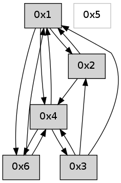

>> << IDX [start] -100 -25 -5 +0 +5 +25 +100 [550.326557159]
 Previous packets
----------------------------------------------------------------------
545.405474 beacon01(adaf) #0 coord=01,02,05,03,04,06 cycle=432.0ms assoc
-- color-indic=0 64 b3 4c
545.415435 beacon02(adaf) #0 coord=01,02,05,03,04,06 cycle=432.0ms assoc 64 e2 b3
545.425436 beacon05(adaf) #0 coord=01,02,05,03,04,06 cycle=432.0ms assoc 64 44 99
545.435435 beacon03(adaf) #0 coord=01,02,05,03,04,06 cycle=432.0ms assoc 64 d8 bd
545.445435 beacon04(adaf) #0 coord=01,02,05,03,04,06 cycle=432.0ms assoc 64 7e 97
545.455436 beacon06(adaf) #0 coord=01,02,05,03,04,06 cycle=432.0ms assoc 64 0a 8b
545.466238 [Hello(1): seq=244 sym=2,6,4 sysInfo= stat=2:8,0,0,0/6:0,0,0,0/4:7,0,0,0]
545.470746 [Hello(4): seq=345 sym=6,3,1 sysInfo= stat=6:2,0,0,0/3:9,0,0,0/1:4,0,0,0]
----------------------------------------------------------------------
545.897581 beacon01(adaf) #0 coord=01,02,05,03,04,06 cycle=432.0ms assoc
-- color-indic=0 64 77 23
545.907542 beacon02(adaf) #0 coord=01,02,05,03,04,06 cycle=432.0ms assoc 64 26 dc
545.917543 beacon05(adaf) #0 coord=01,02,05,03,04,06 cycle=432.0ms assoc 64 80 f6
545.927542 beacon03(adaf) #0 coord=01,02,05,03,04,06 cycle=432.0ms assoc 64 1c d2
545.937542 beacon04(adaf) #0 coord=01,02,05,03,04,06 cycle=432.0ms assoc 64 ba f8
545.947543 beacon06(adaf) #0 coord=01,02,05,03,04,06 cycle=432.0ms assoc 64 ce e4
----------------------------------------------------------------------
546.389689 beacon01(adaf) #0 coord=01,02,05,03,04,06 cycle=432.0ms assoc
-- color-indic=0 64 3b 93
546.399650 beacon02(adaf) #0 coord=01,02,05,03,04,06 cycle=432.0ms assoc 64 6a 6c
546.409650 beacon05(adaf) #0 coord=01,02,05,03,04,06 cycle=432.0ms assoc 64 cc 46
546.419651 beacon03(adaf) #0 coord=01,02,05,03,04,06 cycle=432.0ms assoc 64 50 62
546.429651 beacon04(adaf) #0 coord=01,02,05,03,04,06 cycle=432.0ms assoc 64 f6 48
546.439651 beacon06(adaf) #0 coord=01,02,05,03,04,06 cycle=432.0ms assoc 64 82 54
546.451326 [Hello(4): seq=346 sym=6,3,1 sysInfo= stat=6:2,0,0,0/3:9,0,0,0/1:4,0,0,0]
546.461263 [Hello(1): seq=245 sym=2,6,4 sysInfo= stat=2:8,0,0,0/6:0,0,0,0/4:8,0,0,0]
----------------------------------------------------------------------
546.881798 beacon01(adaf) #0 coord=01,02,05,03,04,06 cycle=432.0ms assoc
-- color-indic=0 64 ff fc
546.891759 beacon02(adaf) #0 coord=01,02,05,03,04,06 cycle=432.0ms assoc 64 ae 03
546.901759 beacon05(adaf) #0 coord=01,02,05,03,04,06 cycle=432.0ms assoc 64 08 29
546.911760 beacon03(adaf) #0 coord=01,02,05,03,04,06 cycle=432.0ms assoc 64 94 0d
546.921760 beacon04(adaf) #0 coord=01,02,05,03,04,06 cycle=432.0ms assoc 64 32 27
546.931761 beacon06(adaf) #0 coord=01,02,05,03,04,06 cycle=432.0ms assoc 64 46 3b
----------------------------------------------------------------------
547.373907 beacon01(adaf) #0 coord=01,02,05,03,04,06 cycle=432.0ms assoc
-- color-indic=0 64 b2 fb
547.383868 beacon02(adaf) #0 coord=01,02,05,03,04,06 cycle=432.0ms assoc 64 e3 04
547.393868 beacon05(adaf) #0 coord=01,02,05,03,04,06 cycle=432.0ms assoc 64 45 2e
547.403868 beacon03(adaf) #0 coord=01,02,05,03,04,06 cycle=432.0ms assoc 64 d9 0a
547.413868 beacon04(adaf) #0 coord=01,02,05,03,04,06 cycle=432.0ms assoc 64 7f 20
547.423869 beacon06(adaf) #0 coord=01,02,05,03,04,06 cycle=432.0ms assoc 64 0b 3c
547.434661 [Hello(1): seq=246 sym=2,6,4 sysInfo= stat=2:9,0,0,0/6:0,0,0,0/4:8,0,0,0]
547.439196 [Hello(4): seq=347 sym=6,3,1 sysInfo= stat=6:2,0,0,0/3:9,0,0,0/1:5,0,0,0]
----------------------------------------------------------------------
547.866017 beacon01(adaf) #0 coord=01,02,05,03,04,06 cycle=432.0ms assoc
-- color-indic=0 64 76 94
547.875978 beacon02(adaf) #0 coord=01,02,05,03,04,06 cycle=432.0ms assoc 64 27 6b
547.885978 beacon05(adaf) #0 coord=01,02,05,03,04,06 cycle=432.0ms assoc 64 81 41
547.895979 beacon03(adaf) #0 coord=01,02,05,03,04,06 cycle=432.0ms assoc 64 1d 65
547.905979 beacon04(adaf) #0 coord=01,02,05,03,04,06 cycle=432.0ms assoc 64 bb 4f
547.915980 beacon06(adaf) #0 coord=01,02,05,03,04,06 cycle=432.0ms assoc 64 cf 53
547.927605 [Hello(6): seq=262 sym=4,1 sysInfo= stat=4:3,0,0,0/1:4,0,0,0]
----------------------------------------------------------------------
548.358126 beacon01(adaf) #0 coord=01,02,05,03,04,06 cycle=432.0ms assoc
-- color-indic=0 64 3a 24
548.368087 beacon02(adaf) #0 coord=01,02,05,03,04,06 cycle=432.0ms assoc 64 6b db
548.378086 beacon05(adaf) #0 coord=01,02,05,03,04,06 cycle=432.0ms assoc 64 cd f1
548.388087 beacon03(adaf) #0 coord=01,02,05,03,04,06 cycle=432.0ms assoc 64 51 d5
548.398087 beacon04(adaf) #0 coord=01,02,05,03,04,06 cycle=432.0ms assoc 64 f7 ff
548.408088 beacon06(adaf) #0 coord=01,02,05,03,04,06 cycle=432.0ms assoc 64 83 e3
548.419501 [Hello(1): seq=247 sym=2,6,4 sysInfo= stat=2:10,0,0,0/6:1,0,0,0/4:9,0,0,0]
548.423409 [Hello(4): seq=348 sym=6,3,1 sysInfo= stat=6:3,0,0,0/3:10,0,0,0/1:5,0,0,0]
----------------------------------------------------------------------
548.850233 beacon01(adaf) #0 coord=01,02,05,03,04,06 cycle=432.0ms assoc
-- color-indic=0 64 fe 4b
548.860194 beacon02(adaf) #0 coord=01,02,05,03,04,06 cycle=432.0ms assoc 64 af b4
548.870195 beacon05(adaf) #0 coord=01,02,05,03,04,06 cycle=432.0ms assoc 64 09 9e
548.880196 beacon03(adaf) #0 coord=01,02,05,03,04,06 cycle=432.0ms assoc 64 95 ba
548.890195 beacon04(adaf) #0 coord=01,02,05,03,04,06 cycle=432.0ms assoc 64 33 90
548.900195 beacon06(adaf) #0 coord=01,02,05,03,04,06 cycle=432.0ms assoc 64 47 8c
----------------------------------------------------------------------
549.342341 beacon01(adaf) #0 coord=01,02,05,03,04,06 cycle=432.0ms assoc
-- color-indic=0 64 a0 2a
549.352301 beacon02(adaf) #0 coord=01,02,05,03,04,06 cycle=432.0ms assoc 64 f1 d5
549.362301 beacon05(adaf) #0 coord=01,02,05,03,04,06 cycle=432.0ms assoc 64 57 ff
549.372302 beacon03(adaf) #0 coord=01,02,05,03,04,06 cycle=432.0ms assoc 64 cb db
549.382303 beacon04(adaf) #0 coord=01,02,05,03,04,06 cycle=432.0ms assoc 64 6d f1
549.392302 beacon06(adaf) #0 coord=01,02,05,03,04,06 cycle=432.0ms assoc 64 19 ed
549.403962 [Hello(4): seq=349 sym=6,3,1 sysInfo= stat=6:3,0,0,0/3:10,0,0,0/1:5,0,0,0]
549.406754 [Hello(1): seq=248 sym=2,6,4 sysInfo= stat=2:10,0,0,0/6:1,0,0,0/4:10,0,0,0]
----------------------------------------------------------------------
549.834450 beacon01(adaf) #0 coord=01,02,05,03,04,06 cycle=432.0ms assoc
-- color-indic=0 64 64 45
549.844411 beacon02(adaf) #0 coord=01,02,05,03,04,06 cycle=432.0ms assoc 64 35 ba
549.854411 beacon05(adaf) #0 coord=01,02,05,03,04,06 cycle=432.0ms assoc 64 93 90
549.864411 beacon03(adaf) #0 coord=01,02,05,03,04,06 cycle=432.0ms assoc 64 0f b4
549.874413 beacon04(adaf) #0 coord=01,02,05,03,04,06 cycle=432.0ms assoc 64 a9 9e
549.884413 beacon06(adaf) #0 coord=01,02,05,03,04,06 cycle=432.0ms assoc 64 dd 82